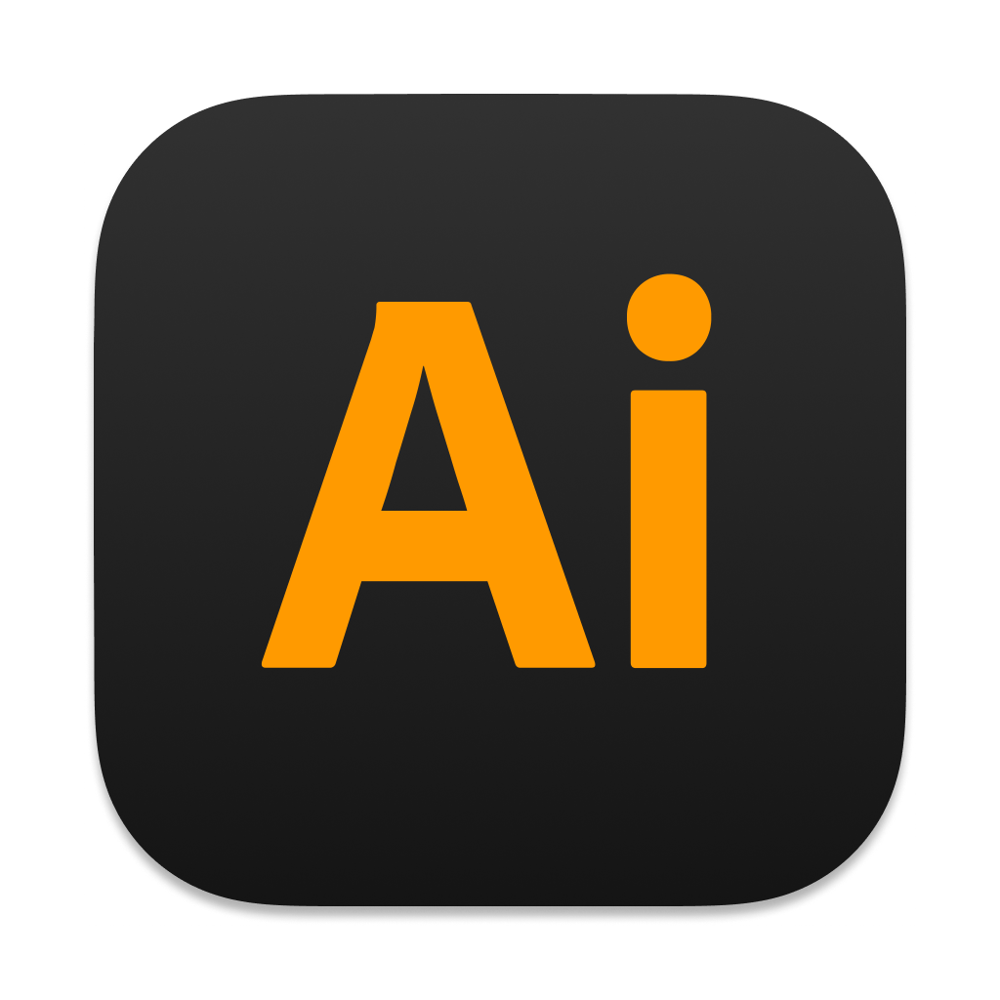
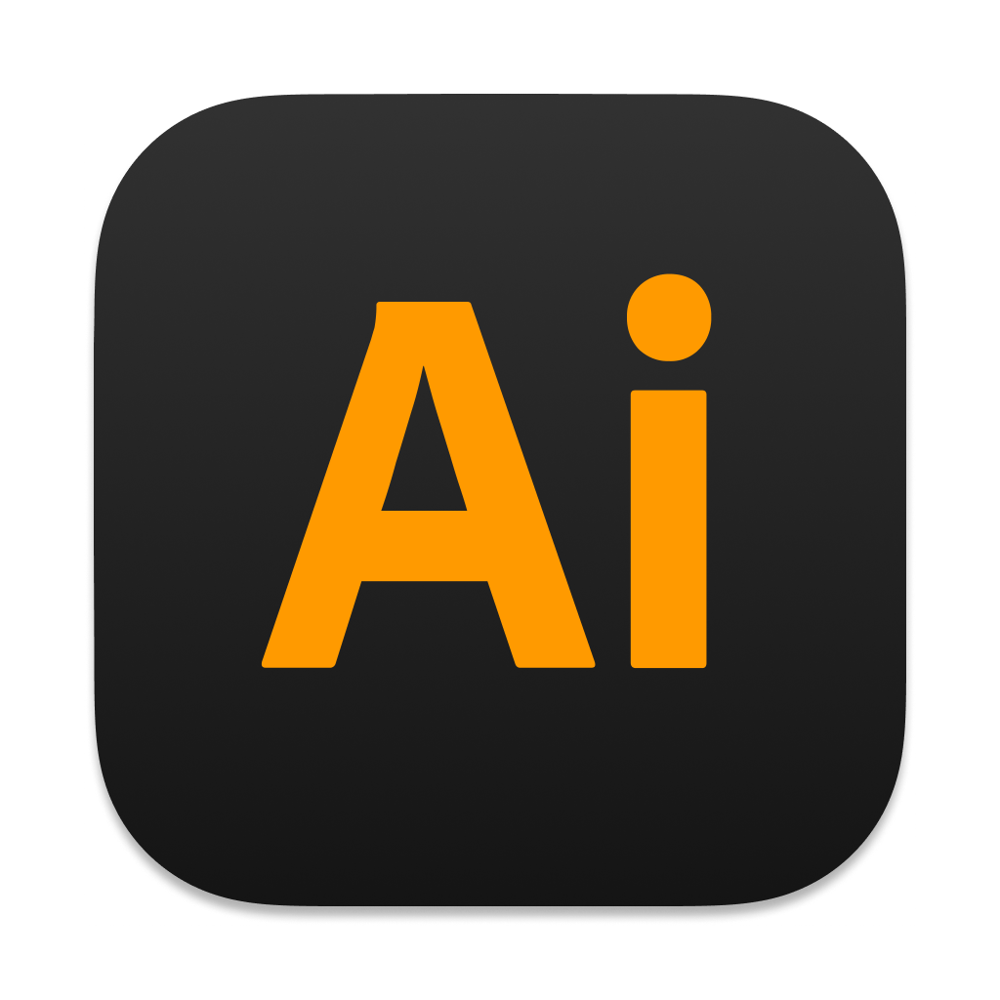

📊 GGA Partners — Strategic Data Visuals
Crafted 11 executive-ready data visualizations for a strategy report. Inspired by McKinsey and Bain formats, the assets were optimized for clarity and alignment with stakeholder communication goals. Delivered both SVG and PNG sets, supporting fast iteration cycles and consistent branding.
#datavisualization #executivedesign #consulting
📱 MyManagement Portal — Student Experience Redesign
Overhauled the Department of Management’s student portal at UTSC. Led wireframe development, content grouping, iconography, and feedback synthesis from 2,000+ students. Final system increased access to academic, career, and wellness resources. Recognized for accessibility improvements.
#uxdesign #accessibility #highered
📘 Mindset4Growth — Learning Experience Design
Developed 5 interactive ebooks and modular content kits for a coaching startup’s brand launch. Designed for readability, mobile-compatibility, and clear progression. Each deliverable aligned with coaching pillars and supported user retention goals.
#contentdesign #uxwriting #edtech
🏷️ WeAreGoldenHour — Visual Identity for Merch Drops
Created visually inclusive sticker packs for a plus-size fashion brand. Designs reflected body positivity and expressive fashion aesthetics. Two drops sold out, transitioning the collab into a permanent merch series.
#branding #graphicdesign #inclusivevisuals
💼 DLSPH — Information Architecture & Governance
Led the UX and IA overhaul of over 30 SharePoint-based intranet and extranet sites. Delivered template systems, icon libraries, and a training deck reused by 50+ UofT public health offices. Project saved over 12 months of development time and improved content ownership.
#informationarchitecture #sharepoint #scalabledesign
🎞️ Custom Lofi Loop — Animated Narrative Artwork
Commissioned to design a personalized animated artwork inspired by the 'Lofi Girl' aesthetic. Merged digital painting with ambient rhythm loops to create an emotionally evocative visual. Final delivery exceeded expectations, earning double payment.
#motiondesign #illustration #personalization
🤠DECA U — VP of Marketing & Events
Served as Vice President for the University of Toronto DECA chapter. Led digital strategy, social content, and event design for competitions and career events. Produced branded materials, coordinated with student services, and helped grow chapter engagement across multiple campuses. Promoted leadership, brand consistency, and student participation.
#leadership #eventdesign #studentorg
 
 
